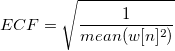

Legen Sie das Abtastintervall fest. Die Standardeinstellung ist <Auto>, die einem automatisch berechneten Intervall entspricht. Einzelheiten lesen Sie bitte im Abschnitt zum Algorithmus nach.
Legt den Fenstertyp fest, der zum Unterdrücken von Frequenzverlusten verwendet wird.
- Rechteck
- Welch
- Dreieckig
- Bartlett
- Hanning
- Hamming
- Blackman
- Gaussian
- Kaiser
Weitere Informationen finden Sie unter Algorithmen, FFT.
Legt den Faktor der Fensterkorrektur fest, der verwendet wird, um die Änderung, die durch Anwenden eines Fensters auf die Eingabedaten vorgenommen wurde, zu korrigieren.
- Kein: Es wird keine Korrektur angewendet.
- Amplitude: Es wird eine Amplitudenkorrektur angewendet. Diese Option wird verwendet, wenn die wahre Amplitude der engen Banddaten benötigt wird. Der Faktor der Amplitudenkorrektur wird definiert mit
![ACF=\frac{1}{mean(w[n])}](../images/The_FFT1_Dialog_Box/math-86cf95c6418cac294454b398295ed5eb.png "ACF=\frac{1}{mean(w[n])}")
- Leistung: Es wird eine Energiekorrektur angewendet. Diese Option wird verwendet, wenn die wahre Energiestufe der Daten benötigt wird. Der Faktor der Leistungskorrektur wird definiert mit
-
- 
Legt fest, ob die komplexen, realen, imaginären Ausgaben, die Betrags- sowie die quadrierten Betragsausgaben normiert werden. Die Standardeinstellung ist falsch. Beachten Sie, dass andere Ausgaben wie Amplituden nicht von dieser Variablen beeinträchtigt werden. Einzelheiten lesen Sie bitte im Abschnitt zum Algorithmus nach.
Legt fest, ob das Ergebnis neu angeordnet werden soll, so dass die niedrigeren Frequenzkomponenten sich in der Mitte befinden.
Legt fest, ob die Phase entpackt werden soll.
Legt fest, ob die Ingenieur- oder Wissenschaftskonventionen verwendet werden, um das Vorzeichen des exponentiellen Phasenfaktors zu setzen.
- -1 (Ingenieur): Das Phasenfaktorvorzeichen ist umgekehrt zur wissenschaftlichen Option.
- +1 (Wissenschaft): Der Phasenfaktor wird entsprechend der Formel auf Seite 503 von Numerical Recipes in C, 2. Auflage, festgelegt.
Legt das Nyquist-Intervall fest, über das die Potenz berechnet wird.
- <Auto>: Wenn das Eingabesignal real ist, wird eine einseitiges Leistungsspektrum gewählt; ansonsten wird das zweiseitige Leistungsspektrum gewählt. Wenn diese Option gewählt ist, prüft Origin die Eingabedaten, um festzustellen, ob sie komplex sind oder nicht. Wenn die Eingabedaten in einer Spalte des komplexen Datentyps gespeichert sind, die Daten aber nur einen realen Teil enthalten, behandelt Origin sie als real und nicht als komplex, was in einem einseitigen Spektrum resultiert. Wenn die Eingabedaten alternativ als imaginären Teil eine Nullspalte enthalten, betrachtet Origin die Eingabe ebenfalls als real und produziert ein einseitiges Spektrum.
- Einseitig: Die einseitige Leistung wird berechnet.
- Zweiseitig: Die zweiseitige Leistung wird berechnet.
Legt die Normierungsmethode der Leistungsdichte fest. Einzelheiten lesen Sie bitte im Abschnitt zum Algorithmus nach.
- MSA-Mittelwert der quadrierten Amplitude: Methode des Mittelwerts der quadrierten Amplitude
- SSA-Summe der quadrierten Amplitude: Methode der Summe der quadrierten Amplitude
- TISA-Zeitintervall der quadrierten Amplitude: Methode des Zeitintervalls der quadrierten Amplitude
Legt den Inhalt der Vorschau im Dialogfeld fest.
Keine, Amplitude/Phase, Potenz/Phase, Amplitude, Imaginär, Betrag, Phase, Potenz, Real, Real/Imaginär, dB, Normierte dB, RMS-Amplitude, Quadrierte Amplitude , Quadrierter Betrag